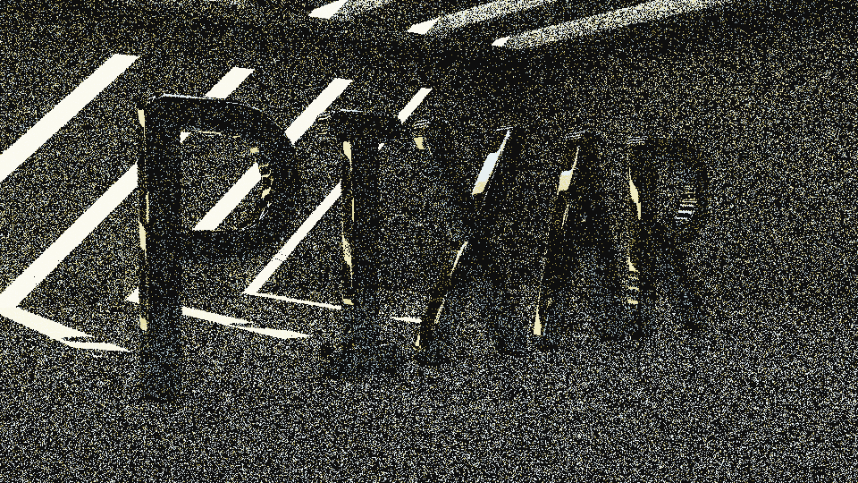
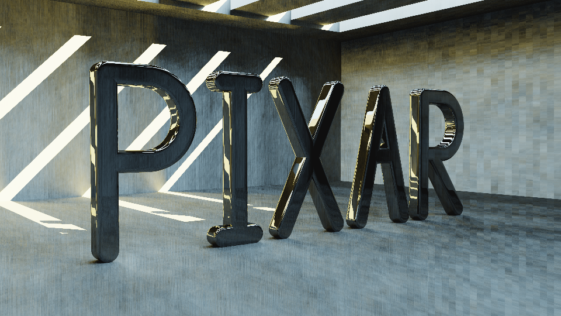

Revisiting the postcard pathtracer with CUDA and Optix
Last week, I revisited Andrew Kensler's business card raytracer to make it run as fast as possible[1]. It was a lot of fun and I learned a lot in the process. I enjoyed it so much that I decided to revisit Andrew's follow up, the postcard sized pathtracer[2].
I spent a lot of time trying to make sense of that code back in 2018 and I knew it was going to be a bigger challenge. Because it is a pathtracer and not a raytracer, it is more computationally intensive. The quality of the image is directly correlated with how many rays are cast per pixel.
This twist allowed me to change the rules of my self-imposed game. Instead of attempting to run as fast as possible, I decided on a time budget (1mn) and resolved to generate the best image possible. The name of the game was to maximize the samples per pixel (spp) at resolution 960x540.
The hardware used was a DB4[3] cube containing a Ryzen 5 2600 (6 cores, 12 threads at 3.5Ghz) with an Nvidia Pascal based GTX 1050 Ti GPU.
I followed the same path as last time. Starting with compiler flags, then moving to SIMD, multi-threading, and GPU rendering via CUDA. In the end, despite skepticism, I gave a try to OptiX denoiser and it blew my mind.
Cleaning up the code
At first sight, the postcard pathtracer code (pixar.cpp) is a tad intimidating.
Adding colors to outline the different parts helps to understand that it is in fact very simple with seven sections based on a Pixel Sampler with RayMarches into a Database.
With a bit of renaming and clang-tidy, a.cpp gives a much clearer picture.
Establishing the baseline
To make testing easier, I modified the code to take as parameter the number of samples per pixel. The 1mn budget was completely blown up when establishing the baseline (with all optimization disabled). Even lowering spp to one, it took 5mn27s to generate a very noisy image.
$ clang -O0 -lm -o a a.cpp
$ time ./a 1 > /dev/null
real 5m27.311s
user 5m27.094s
sys 0m0.078s
One core, no SIMD, -O0, and 1spp = 5mn27s runtime.
Compiler optimizations
The first step, and some people would even argue that there is nothing below -O3 and it should have been the base, is to enable compiler optimizations. Performance improved 30x resulting in 6spp.
$ clang -lm -O3 -o a a.cpp
$ time ./a 6 > /dev/null
real 0m58.100s
user 0m58.266s
sys 0m0.031s
With -O3 the pathtracer can be pushed to 6spp and renders in 57s.
-fFast-math
There is a compilation flag, -ffast-math, which allows the compiler to relax IEEE 754 compliance in favor of performance. It is automatically enabled when using -Ofast and shows another 2.6x performance improvement allowing 16spp.
$ clang -lm -Ofast -o a a.cpp
$ time ./a 16 > /dev/null
real 0m56.304s
user 0m56.266s
sys 0m0.031s
With -ffast-math we can cross a double digit spp to reach 16.Trivia: Opening the executable with BinaryNinja showed that clang was able to detect two calls to cosf(X) and sinf(X) separated by several lines of code and optimizes them into sincosf (which I had no idea existed). Surprisingly this only happened with -Ofast and not with -O3.
Going SIMD
Going SIMD is something I also did when I revisited the business card raytracer. Or at least I thought I did. I was mistaken when after opening the binary and seeing XMM registers in use I concluded that SIMD instructions were used.
Just because compiler is outputting SIMD instructions it does not mean it's taken care of. In asm you can see that pretty much all mul/add instructions have ss or sd suffix - meaning they operate on single data element. What you want is to have mulps/mulpd instructions.
In a professional environment I would probably not have felt confident relying on the compiler's good will. Using intrinsics via "nmmintrin.h", __m128, _mm_set_ps, _mm_add_ps, and _mm_div_ps[5] would have been safer. For research purposes however it was fine.
Modifying the Vector struct to operate on four items (b.cpp) secured the Packet SIMD Instructions mulps and addps.
$ clang -lm -Ofast -o b b.cpp
$ time ./b 17 > /dev/null
real 0m59.722s
user 0m59.719s
sys 0m0.000s
The speed increase was marginal (17spp) and the visual difference imperceptible.
Using all cores
At this point, it was time to use the 11 other cores on the Ryzen 5 2600. The task was considerably facilitated by the code from the previous exercise. A few pthread_create and pthread_join resulted in c.cpp which spawn 540 threads, each rendering lines of 960 pixels.
$ clang -lm -lpthread -Ofast -o c c.cpp
$ time ./c 128 > /dev/null
real 0m55.203s
user 10m52.188s
sys 0m0.063s
As expected, the performance gain was linear with the number of cores. Twelve of them allowed to push sampling to 128spp. However the visual result had too much personality for my liking. It is fast but also ugly. What is going on here?
There is a visible repeating horizontal pattern. Could it be explained by the random generator implemented by truncating libc's rand()[6] and keeping only the linear congruential generator (LCG)?
Nope. LCG is fine. The problem was that each thread pseudo-random number generator seed is initialized with the same value. Which means the same "random" serie is used across each line. Changing the seed value to use the thread id fixed the glitch (d.cpp). 12 cores, -Ofast -> 128spp. Still noisy.Trivia: The business raytracer optimization from last week prompted feedback from readers advising that 500+ threads was messing up with the scheduler and likely degraded performance. I tried to lower the thread count (12, 24, and even 36) but could not confirm this claim. An OS may have trouble dealing with 10,000 threads but it looks like Linux was well able to handle 500 of them.
GPGPU with CUDA
All optimizations used for the business card raytracer were applied into e.cu.
The speed gain (2048spp) was monstrous. Unfortunately, so was the generated image. Probably a bug in the kernel.
That bug took an afternoon to track down. Ultimately the culprit was determined to be fastmath flag which made intrinsic __powf too inaccurate for ray-marching. Replacing it with manual multiplication (f.cu) solved the problem but also reduced spp to 600. There was also another issue.
Quite artistic but also quite not right.
The pseudo-random generator had been converted in a hurry using the same seed uninitialized seed for a whole Streaming Multiprocessor. Using cuRAND and having a seed per block/thread solved the issue (g.cu). GPGPU rendering, 600spp. And still noisy.
Denoising
Starting with OptiX 5.0, NVidia provides an A.I based denoiser with a pre-trained neural network. Even though NVidia claimed the model was "trained using tens of thousands of images rendered from one thousand 3D scenes", I had reservations about the result. I didn't even check the API and instead used Declan Russeel's standalone executable[7].
The denoiser ran in 300ms and the result made me eat my words. It is so good it is mind-blowing. A denoised 600spp which takes 1mn to render is equivalent to a 40,960spp which takes 1h to render.
Below is presented the denoised version (d) from 1spp to 2048spp. There is a minimum under which denoising does not work well (1spp and 2spp :P). Inversely, there is a threshold after which returns diminishes. The sweet spot for this method seems to be around 512spp.